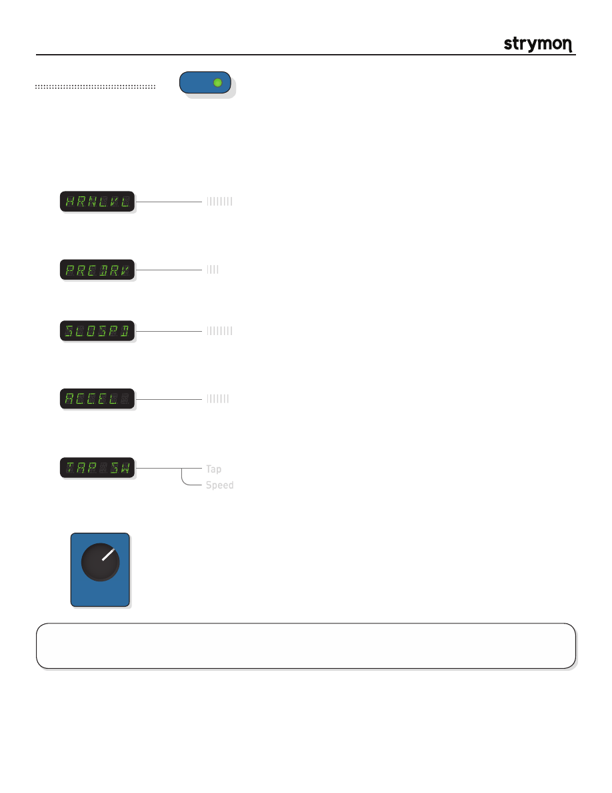

Mobius
-
User Manual
®
pg 10
TYPE
push (bank/BPM)
hold (save)
push (param)
hold (global)
VALUE
PARAM 1
PARAM 2
B
TAP
A
SPEED
DEPTH
LEVEL
BANK DOWN
BANK UP
FILTER
DESTROYER
VIBE
ROTARY
FLANGER
PHASER
CHORUS
FORMANT
AUTOSWELL
VINTAGE TREM
PATTERN TREM
QUADRATURE
®
Mod Machines: Rotary
A realistic recreation of a rotary speaker cabinet commonly used with tonewheel organs and guitars. Just like an actual
rotating speaker cabinet, the speed of rotation can be varied between slow and fast speeds.
PARAMETERS:
Horn Level
:
Controls the output of the high frequency rotating horn driver.
TIPS & TRICKS:
In the ROTARY machine, the SPEED knob controls the fast rotor speed. Set the DEPTH control high for
close-miking and maximum intensity, and dial it back for a more mellow effect.
||||||||
Preamp Drive
:
Controls the drive of the rotary cabinet’s tube preamp and phase inverter stages.
Turn up for a more overdriven cab sound.
||||
Slow Rotor speed
: Controls the speed of the rotors in SLOW speed.
||||||||
Acceleration
:
Controls how quickly the rotors transition from Fast to Slow and from Slow to
Fast speed. The rotors will accelerate independently.
|||||||
TAP Switch
:
Determines whether to use the TAP footswitch as a tap tempo or a slow/fast
speed toggle.
Tap
Speed
Mic Distance
:
Varies the distance of the two stereo microphones from the rotating horn driver.
The
DEPTH
knob takes this function on the Rotary machine.
TYPE
push (bank/BPM)
hold (save)
push (param)
hold (global)
VALUE
PARAM 1
PARAM 2
B
TAP
A
SPEED
DEPTH
LEVEL
BANK DOWN
BANK UP
FILTER
DESTROYER
VIBE
ROTARY
FLANGER
PHASER
CHORUS
FORMANT
AUTOSWELL
VINTAGE TREM
PATTERN TREM
QUADRATURE
®